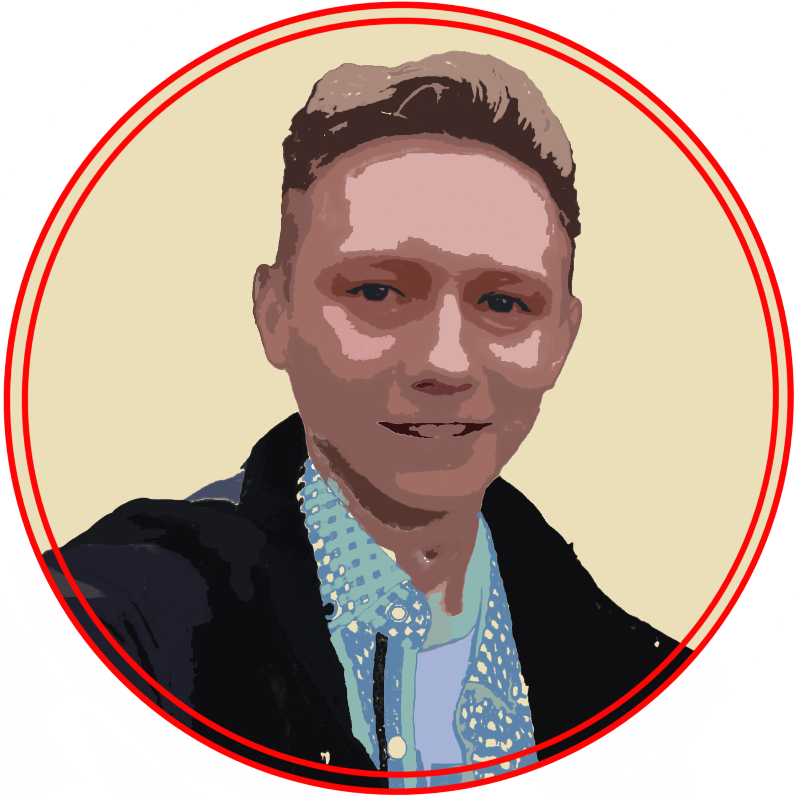
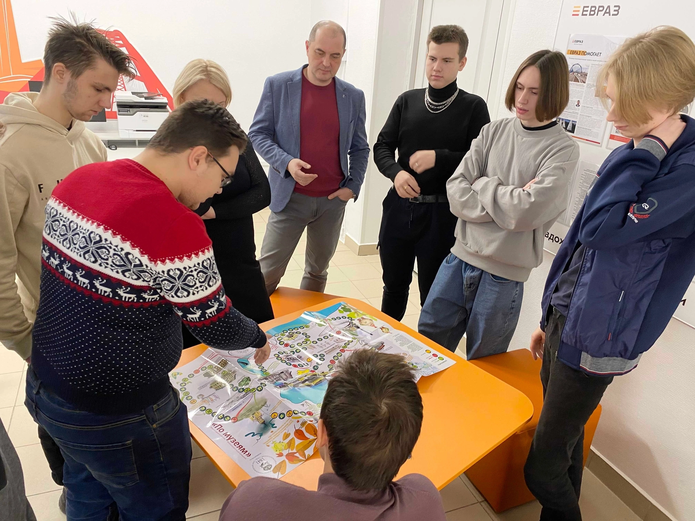

"Вперёд в прошлое" - первая кофейня в институте в Нижнем Тагиле. Каждый студент и сотрудник НТИ (ф) УРФУ может насладиться чашечкой кофе после пар.
Она находится в НТИ(ф) УРФУ, находящемуся по адресу: ул. Красногвардейская, 59
"Вперёд в прошлое" - это качество, доступность и востребованность. Погрузитесь в атмосферу качественного и вкусного студенческого кофе.
Основатель кофейни: Пестерев Данил

Галерея
Больше фото у нас в группе ВК
События
Команда «Современники» Нижнетагильского технологического института (филиала) УрФУ – участники всероссийского акселератора социальных инициатив RAISE – включилась в образовательную часть проекта и его практическую составляющую. Два раза в неделю у ребят онлайн-лекции. Эксперты рассказывают студентам о проектировании в социальном предпринимательстве, как составить бизнес-план и монетизировать идею, методах эффективной работы команды и юридических вопросах, а самое главное – как разработать минимально жизнеспособный продукт. Над ним, кстати, политехники уже начали работу. Заведующая научно-просветительным отделом Нижнетагильского музея-заповедника «Горнозаводской Урал» Лилия Верещацкая предложила студентам перевести в мобильный формат настольную игру-бродилку по музеям города. Игра пользуется большой популярностью у дошколят. С ее помощью дети знакомятся с историей города, его знаменитыми жителями и достопримечательностями. В мобильной или компьютерной версии игра была бы доступна более широкому кругу маленьких тагильчан.
"Сокровища Деда Музея"
Смотреть больше в группе ВК
